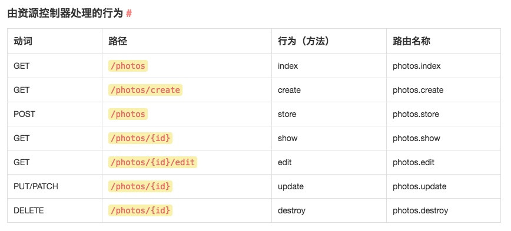

<!DOCTYPE html>


  


<html class="theme-next pisces use-motion" lang="zh-Hans">
<head><meta name="generator" content="Hexo 3.8.0">
  <meta charset="UTF-8">
<meta http-equiv="X-UA-Compatible" content="IE=edge">
<meta name="viewport" content="width=device-width, initial-scale=1, maximum-scale=1">
<meta name="theme-color" content="#222">


<meta http-equiv="Cache-Control" content="no-transform">
<meta http-equiv="Cache-Control" content="no-siteapp">


  
  
  <link href="/lib/fancybox/source/jquery.fancybox.css?v=2.1.5" rel="stylesheet" type="text/css">


<link href="/lib/font-awesome/css/font-awesome.min.css?v=4.6.2" rel="stylesheet" type="text/css">

<link href="/css/main.css?v=5.1.4" rel="stylesheet" type="text/css">


  <link rel="apple-touch-icon" sizes="180x180" href="/images/apple-touch-icon-next.png?v=5.1.4">


  <link rel="icon" type="image/png" sizes="32x32" href="/images/favicon-32x32-next.png?v=5.1.4">


  <link rel="icon" type="image/png" sizes="16x16" href="/images/favicon-16x16-next.png?v=5.1.4">


  <link rel="mask-icon" href="/images/logo.svg?v=5.1.4" color="#222">


  <meta name="keywords" content="laravel,">


<meta name="description" content="app_env常用值 local testing staging production">
<meta name="keywords" content="laravel">
<meta property="og:type" content="article">
<meta property="og:title" content="laravel最佳实践">
<meta property="og:url" content="http://benbuly.github.io/2018/11/10/laravel最佳实践/index.html">
<meta property="og:site_name" content="Henry&#39;s Blog">
<meta property="og:description" content="app_env常用值 local testing staging production">
<meta property="og:locale" content="zh-Hans">
<meta property="og:image" content="http://benbuly.github.io/2018/11/10/laravel最佳实践/09GHC72ygP.png">
<meta property="og:updated_time" content="2018-12-22T16:41:09.000Z">
<meta name="twitter:card" content="summary">
<meta name="twitter:title" content="laravel最佳实践">
<meta name="twitter:description" content="app_env常用值 local testing staging production">
<meta name="twitter:image" content="http://benbuly.github.io/2018/11/10/laravel最佳实践/09GHC72ygP.png">


<script type="text/javascript" id="hexo.configurations">
  var NexT = window.NexT || {};
  var CONFIG = {
    root: '/',
    scheme: 'Pisces',
    version: '5.1.4',
    sidebar: {"position":"left","display":"post","offset":12,"b2t":false,"scrollpercent":false,"onmobile":false},
    fancybox: true,
    tabs: true,
    motion: {"enable":true,"async":false,"transition":{"post_block":"fadeIn","post_header":"slideDownIn","post_body":"slideDownIn","coll_header":"slideLeftIn","sidebar":"slideUpIn"}},
    duoshuo: {
      userId: '0',
      author: '博主'
    },
    algolia: {
      applicationID: '',
      apiKey: '',
      indexName: '',
      hits: {"per_page":10},
      labels: {"input_placeholder":"Search for Posts","hits_empty":"We didn't find any results for the search: ${query}","hits_stats":"${hits} results found in ${time} ms"}
    }
  };
</script>


  <link rel="canonical" href="http://benbuly.github.io/2018/11/10/laravel最佳实践/">


  <title>laravel最佳实践 | Henry's Blog</title>
  


</head>

<body itemscope="" itemtype="http://schema.org/WebPage" lang="zh-Hans">

  
  
    
  

  <div class="container sidebar-position-left page-post-detail">
    <div class="headband">
	<a href="https://github.com/benbuly"></a></div>
    <header id="header" class="header" itemscope="" itemtype="http://schema.org/WPHeader">
      <div class="header-inner"><div class="site-brand-wrapper">
  <div class="site-meta ">
    

    <div class="custom-logo-site-title">
      <a href="/" class="brand" rel="start">
        <span class="logo-line-before"><i></i></span>
        <span class="site-title">Henry's Blog</span>
        <span class="logo-line-after"><i></i></span>
      </a>
    </div>
      
        <p class="site-subtitle"></p>
      
  </div>

  <div class="site-nav-toggle">
    <button>
      <span class="btn-bar"></span>
      <span class="btn-bar"></span>
      <span class="btn-bar"></span>
    </button>
  </div>
</div>

<nav class="site-nav">
  

  
    <ul id="menu" class="menu">
      
        
        <li class="menu-item menu-item-home">
          <a href="/" rel="section">
            
              <i class="menu-item-icon fa fa-fw fa-home"></i> <br>
            
            首页
          </a>
        </li>
      
        
        <li class="menu-item menu-item-about">
          <a href="/about/" rel="section">
            
              <i class="menu-item-icon fa fa-fw fa-user"></i> <br>
            
            关于
          </a>
        </li>
      
        
        <li class="menu-item menu-item-tags">
          <a href="/tags/" rel="section">
            
              <i class="menu-item-icon fa fa-fw fa-tags"></i> <br>
            
            标签
          </a>
        </li>
      
        
        <li class="menu-item menu-item-archives">
          <a href="/archives/" rel="section">
            
              <i class="menu-item-icon fa fa-fw fa-archive"></i> <br>
            
            归档
          </a>
        </li>
      

      
    </ul>
  

  
</nav>


 </div>
    </header>

    <main id="main" class="main">
      <div class="main-inner">
        <div class="content-wrap">
          <div id="content" class="content">
            

  <div id="posts" class="posts-expand">
    

  

  
  
  

  <article class="post post-type-normal" itemscope="" itemtype="http://schema.org/Article">
  
  
  
  <div class="post-block">
    <link itemprop="mainEntityOfPage" href="http://benbuly.github.io/2018/11/10/laravel最佳实践/">

    <span hidden itemprop="author" itemscope="" itemtype="http://schema.org/Person">
      <meta itemprop="name" content="Henry">
      <meta itemprop="description" content="">
      <meta itemprop="image" content="/images/avatar.gif">
    </span>

    <span hidden itemprop="publisher" itemscope="" itemtype="http://schema.org/Organization">
      <meta itemprop="name" content="Henry's Blog">
    </span>

    
      <header class="post-header">

        
        
          <h1 class="post-title" itemprop="name headline">laravel最佳实践</h1>
        

        <div class="post-meta">
          <span class="post-time">
            
              <span class="post-meta-item-icon">
                <i class="fa fa-calendar-o"></i>
              </span>
              
                <span class="post-meta-item-text">发表于</span>
              
              <time title="创建于" itemprop="dateCreated datePublished" datetime="2018-11-10T23:56:25+08:00">
                2018-11-10
              </time>
            

            

            
          </span>

          

          
            
          

          
          

          

          

          

        </div>
      </header>
    

    
    
    
    <div class="post-body" itemprop="articleBody">

      
      

      
        <h1 id="app-env常用值"><a href="#app-env常用值" class="headerlink" title="app_env常用值"></a>app_env常用值</h1><ul>
<li>local</li>
<li>testing</li>
<li>staging</li>
<li>production</li>
</ul>
<a id="more"></a>
<hr>
<h1 id="开发专用的扩展包"><a href="#开发专用的扩展包" class="headerlink" title="开发专用的扩展包"></a>开发专用的扩展包</h1><ul>
<li><p>安装</p>
  <figure class="highlight php"><table><tr><td class="gutter"><pre><span class="line">1</span><br></pre></td><td class="code"><pre><span class="line">composer <span class="keyword">require</span> laracasts/generators --dev</span><br></pre></td></tr></table></figure>
</li>
<li><p>加载</p>
  <p style="text-align:left">开发专用的 <code>provider</code> 绝不在 <code>config/app.php</code> 中配置，必须在 <code>app/Providers/AppServiceProvider.php</code> 文件中使用一下方式：<br>  </p>

  <figure class="highlight php"><table><tr><td class="gutter"><pre><span class="line">1</span><br><span class="line">2</span><br><span class="line">3</span><br><span class="line">4</span><br><span class="line">5</span><br><span class="line">6</span><br><span class="line">7</span><br></pre></td><td class="code"><pre><span class="line"></span><br><span class="line"><span class="keyword">public</span> <span class="function"><span class="keyword">function</span> <span class="title">register</span><span class="params">()</span></span></span><br><span class="line"><span class="function"></span>&#123;</span><br><span class="line">    <span class="keyword">if</span> (<span class="keyword">$this</span>-&gt;app-&gt;environment() == <span class="string">'local'</span>) &#123;</span><br><span class="line">        <span class="keyword">$this</span>-&gt;app-&gt;register(<span class="string">'Laracasts\Generators\GeneratorsServiceProvider'</span>);</span><br><span class="line">    &#125;</span><br><span class="line">&#125;</span><br></pre></td></tr></table></figure>
</li>
</ul>
<hr>
<h1 id="配置信息和环境变量"><a href="#配置信息和环境变量" class="headerlink" title="配置信息和环境变量"></a>配置信息和环境变量</h1><p>如果业务代码中需要使用 <code>.env</code> 文件中配置项，需要在 <code>config/app.php</code> 文件夹建立相应配置项，然后业务代码中使用 <code>config</code> 辅助函数获取。(原因：生产环境缓存配置项后，不会再载入<code>.env</code>中配置项，所以无法再获取其中配置项)</p>
<p>例如：<br>.env文件中设置：<br><figure class="highlight plain"><table><tr><td class="gutter"><pre><span class="line">1</span><br></pre></td><td class="code"><pre><span class="line">CDN_DOMAIN=cdndomain.com</span><br></pre></td></tr></table></figure></p>
<p>config/app.php文件中设置：<br><figure class="highlight plain"><table><tr><td class="gutter"><pre><span class="line">1</span><br></pre></td><td class="code"><pre><span class="line">‘cdn_domain’ =&gt; env(&apos;CDN_DOMAIN&apos;M,null)</span><br></pre></td></tr></table></figure></p>
<hr>
<h1 id="自定义辅助函数"><a href="#自定义辅助函数" class="headerlink" title="自定义辅助函数"></a>自定义辅助函数</h1><p>自定义辅助函数放在：<code>bootstrap/helper.php</code>，并在<code>bootstrap/app.php</code>文件顶部进行加载<br><figure class="highlight php"><table><tr><td class="gutter"><pre><span class="line">1</span><br><span class="line">2</span><br><span class="line">3</span><br><span class="line">4</span><br></pre></td><td class="code"><pre><span class="line"><span class="meta">&lt;?php</span></span><br><span class="line">    <span class="keyword">require</span> <span class="keyword">__DIR__</span> . <span class="string">'/helpers.php'</span>;</span><br><span class="line"></span><br><span class="line">    ...</span><br></pre></td></tr></table></figure></p>
<hr>
<h1 id="代码风格"><a href="#代码风格" class="headerlink" title="代码风格"></a>代码风格</h1><p>代码风格遵守 <a href="https://laravel-china.org/docs/psr/psr-2-coding-style-guide/1606" title="php代码规范" target="_blank" rel="noopener">psr-2</a> 规范</p>
<hr>
<h1 id="路由"><a href="#路由" class="headerlink" title="路由"></a>路由</h1><h3 id="路由闭包"><a href="#路由闭包" class="headerlink" title=" 路由闭包"></a><i class="fa fa-angle-double-right"></i> 路由闭包</h3><p>绝不 在路由配置文件里书写『闭包路由』或者其他业务逻辑代码，因为一旦使用将无法使用 路由缓存 。路由器要保持干净整洁，绝不 放置除路由配置以外的其他程序逻辑。</p>
<h3 id="Restful-路由"><a href="#Restful-路由" class="headerlink" title=" Restful 路由"></a><i class="fa fa-angle-double-right"></i> Restful 路由</h3><p>必须 优先使用 Restful 路由，配合资源控制器使用<br></p>
<p>超出 Restful 路由的，应该 模仿上图的方式来定义路由</p>
<h3 id="resource-方法正确使用"><a href="#resource-方法正确使用" class="headerlink" title=" resource 方法正确使用"></a><i class="fa fa-angle-double-right"></i> resource 方法正确使用</h3><p>一般资源路由定义：<br><figure class="highlight php"><table><tr><td class="gutter"><pre><span class="line">1</span><br></pre></td><td class="code"><pre><span class="line">Route::resource(<span class="string">'photos'</span>, <span class="string">'PhotosController'</span>);</span><br></pre></td></tr></table></figure></p>
<p>等于以下路由定义：</p>
<figure class="highlight php"><table><tr><td class="gutter"><pre><span class="line">1</span><br><span class="line">2</span><br><span class="line">3</span><br><span class="line">4</span><br><span class="line">5</span><br><span class="line">6</span><br><span class="line">7</span><br></pre></td><td class="code"><pre><span class="line">Route::get(<span class="string">'/photos'</span>, <span class="string">'PhotosController@index'</span>)-&gt;name(<span class="string">'photos.index'</span>);</span><br><span class="line">Route::get(<span class="string">'/photos/create'</span>, <span class="string">'PhotosController@create'</span>)-&gt;name(<span class="string">'photos.create'</span>);</span><br><span class="line">Route::post(<span class="string">'/photos'</span>, <span class="string">'PhotosController@store'</span>)-&gt;name(<span class="string">'photos.store'</span>);</span><br><span class="line">Route::get(<span class="string">'/photos/&#123;photo&#125;'</span>, <span class="string">'PhotosController@show'</span>)-&gt;name(<span class="string">'photos.show'</span>);</span><br><span class="line">Route::get(<span class="string">'/photos/&#123;photo&#125;/edit'</span>, <span class="string">'PhotosController@edit'</span>)-&gt;name(<span class="string">'photos.edit'</span>);</span><br><span class="line">Route::put(<span class="string">'/photos/&#123;photo&#125;'</span>, <span class="string">'PhotosController@update'</span>)-&gt;name(<span class="string">'photos.update'</span>);</span><br><span class="line">Route::delete(<span class="string">'/photos/&#123;photo&#125;'</span>, <span class="string">'PhotosController@destroy'</span>)-&gt;name(<span class="string">'photos.destroy'</span>);</span><br></pre></td></tr></table></figure>
<p>使用 resource 方法时，如果仅使用到部分路由，必须 使用 only 列出所有可用路由：</p>
 <figure class="highlight php"><table><tr><td class="gutter"><pre><span class="line">1</span><br></pre></td><td class="code"><pre><span class="line">Route::resource(<span class="string">'photos'</span>, <span class="string">'PhotosController'</span>, [<span class="string">'only'</span> =&gt; [<span class="string">'index'</span>, <span class="string">'show'</span>]]);</span><br></pre></td></tr></table></figure>
<p> 绝不 使用 except，因为 only 相当于白名单，相对于 except 更加直观。路由使用白名单有利于养成『安全习惯』。</p>
<p> <span style="color:red">资源路由路由 URI 必须 使用复数形式</span></p>
<h3 id="路由模型绑定"><a href="#路由模型绑定" class="headerlink" title="  路由模型绑定"></a><i class="fa fa-angle-double-right"></i>  路由模型绑定</h3><p>在允许使用路由 模型绑定 的地方 必须 使用。<br>模型绑定代码 必须 放置于 app/Providers/RouteServiceProvider.php 文件的 boot 方法中：</p>
<figure class="highlight php"><table><tr><td class="gutter"><pre><span class="line">1</span><br><span class="line">2</span><br><span class="line">3</span><br><span class="line">4</span><br><span class="line">5</span><br><span class="line">6</span><br><span class="line">7</span><br><span class="line">8</span><br><span class="line">9</span><br><span class="line">10</span><br><span class="line">11</span><br><span class="line">12</span><br></pre></td><td class="code"><pre><span class="line"><span class="keyword">public</span> <span class="function"><span class="keyword">function</span> <span class="title">boot</span><span class="params">()</span></span></span><br><span class="line"><span class="function"> </span>&#123;</span><br><span class="line">     Route::bind(<span class="string">'user_name'</span>, <span class="function"><span class="keyword">function</span> <span class="params">($value)</span> </span>&#123;</span><br><span class="line">         <span class="keyword">return</span> User::where(<span class="string">'name'</span>, $value)-&gt;first();</span><br><span class="line">     &#125;);</span><br><span class="line"></span><br><span class="line">     Route::bind(<span class="string">'photo'</span>, <span class="function"><span class="keyword">function</span> <span class="params">($value)</span> </span>&#123;</span><br><span class="line">         <span class="keyword">return</span> Photo::find($value);</span><br><span class="line">     &#125;);</span><br><span class="line"></span><br><span class="line">     <span class="keyword">parent</span>::boot();</span><br><span class="line"> &#125;</span><br></pre></td></tr></table></figure>
<h3 id="全局路由参数"><a href="#全局路由参数" class="headerlink" title="  全局路由参数"></a><i class="fa fa-angle-double-right"></i>  全局路由参数</h3><p> 出于安全考虑，应该 使用全局路由器参数限制。<br>必须 在 RouteServiceProvider 文件的 boot 方法里定义模式：</p>
<figure class="highlight php"><table><tr><td class="gutter"><pre><span class="line">1</span><br><span class="line">2</span><br><span class="line">3</span><br><span class="line">4</span><br><span class="line">5</span><br><span class="line">6</span><br><span class="line">7</span><br><span class="line">8</span><br><span class="line">9</span><br><span class="line">10</span><br><span class="line">11</span><br><span class="line">12</span><br></pre></td><td class="code"><pre><span class="line"><span class="comment">/**</span></span><br><span class="line"><span class="comment"> * 定义你的路由模型绑定，模式过滤器等。</span></span><br><span class="line"><span class="comment"> *</span></span><br><span class="line"><span class="comment"> * <span class="doctag">@param</span>  \Illuminate\Routing\Router  $router</span></span><br><span class="line"><span class="comment"> * <span class="doctag">@return</span> void</span></span><br><span class="line"><span class="comment"> */</span></span><br><span class="line"><span class="keyword">public</span> <span class="function"><span class="keyword">function</span> <span class="title">boot</span><span class="params">(Router $router)</span></span></span><br><span class="line"><span class="function"></span>&#123;</span><br><span class="line">    $router-&gt;pattern(<span class="string">'id'</span>, <span class="string">'[0-9]+'</span>);</span><br><span class="line"></span><br><span class="line">    <span class="keyword">parent</span>::boot($router);</span><br><span class="line">&#125;</span><br></pre></td></tr></table></figure>
<p>模式一旦被定义，便会自动应用到所有使用该参数名称的路由上：</p>
<figure class="highlight php"><table><tr><td class="gutter"><pre><span class="line">1</span><br><span class="line">2</span><br></pre></td><td class="code"><pre><span class="line">Route::get(<span class="string">'users/&#123;id&#125;'</span>, <span class="string">'UsersController@show'</span>);</span><br><span class="line">Route::get(<span class="string">'photos/&#123;id&#125;'</span>, <span class="string">'PhotosController@show'</span>);</span><br></pre></td></tr></table></figure>
<p>只有在 id 为数字时，才会路由到控制器方法中，否则 404 错误。</p>
<h3 id="路由命名"><a href="#路由命名" class="headerlink" title="  路由命名"></a><i class="fa fa-angle-double-right"></i>  路由命名</h3><p>除了 resource 资源路由以外，其他所有路由都 必须 使用 name 方法进行命名。必须 使用『资源前缀』作为命名规范，如下的 users.follow，资源前缀的值users.：</p>
<figure class="highlight php"><table><tr><td class="gutter"><pre><span class="line">1</span><br></pre></td><td class="code"><pre><span class="line">Route::post(<span class="string">'users/&#123;id&#125;/follow'</span>, <span class="string">'UsersController@follow'</span>)-&gt;name(<span class="string">'users.follow'</span>);</span><br></pre></td></tr></table></figure>
<h3 id="获取URL"><a href="#获取URL" class="headerlink" title="  获取URL"></a><i class="fa fa-angle-double-right"></i>  获取URL</h3><p> 获取 URL 必须 遵循以下优先级：</p>
<ol>
<li>$model-&gt;link()</li>
<li>route 方法</li>
<li>url 方法<br>在 Model 中创建 link() 方法：<figure class="highlight php"><table><tr><td class="gutter"><pre><span class="line">1</span><br><span class="line">2</span><br><span class="line">3</span><br><span class="line">4</span><br><span class="line">5</span><br></pre></td><td class="code"><pre><span class="line"><span class="keyword">public</span> <span class="function"><span class="keyword">function</span> <span class="title">link</span><span class="params">($params = [])</span></span></span><br><span class="line"><span class="function"></span>&#123;</span><br><span class="line">    $params = array_merge([<span class="keyword">$this</span>-&gt;id], $params);</span><br><span class="line">    <span class="keyword">return</span> route(<span class="string">'models.show'</span>, $params);</span><br><span class="line">&#125;</span><br></pre></td></tr></table></figure>
</li>
</ol>
<p>所有单个模型数据链接使用：<br><figure class="highlight php"><table><tr><td class="gutter"><pre><span class="line">1</span><br><span class="line">2</span><br><span class="line">3</span><br><span class="line">4</span><br></pre></td><td class="code"><pre><span class="line">$model-&gt;link();</span><br><span class="line"></span><br><span class="line"><span class="comment">// 或者添加参数</span></span><br><span class="line">$model-&gt;link($params = [<span class="string">'source'</span> =&gt; <span class="string">'list'</span>])</span><br></pre></td></tr></table></figure></p>
<p>『单个模型 URI』经常会发生变化，这样做将会让程序更加灵活。<br>除了『单个模型 URI』，其他路由 必须 使用 route 来获取 URL：</p>
<figure class="highlight php"><table><tr><td class="gutter"><pre><span class="line">1</span><br></pre></td><td class="code"><pre><span class="line">$url = route(<span class="string">'profile'</span>, [<span class="string">'id'</span> =&gt; <span class="number">1</span>]);</span><br></pre></td></tr></table></figure>
<p>无法使用 route 的情况下，可以 使用 url 方法来获取 URL：<br><figure class="highlight php"><table><tr><td class="gutter"><pre><span class="line">1</span><br></pre></td><td class="code"><pre><span class="line">url(<span class="string">'profile'</span>, [<span class="number">1</span>]);</span><br></pre></td></tr></table></figure></p>
<hr>
<h1 id="数据模型"><a href="#数据模型" class="headerlink" title="数据模型"></a>数据模型</h1><h3 id="放置位置"><a href="#放置位置" class="headerlink" title=" 放置位置"></a><i class="fa fa-angle-double-right"></i> 放置位置</h3><p>所有的数据模型文件，都 必须 存放在：<code>app/Models/</code> 文件夹中。<br>命名空间：<br><figure class="highlight php"><table><tr><td class="gutter"><pre><span class="line">1</span><br></pre></td><td class="code"><pre><span class="line"><span class="keyword">namespace</span> <span class="title">App</span>\<span class="title">Models</span>;</span><br></pre></td></tr></table></figure></p>
<h3 id="User-php"><a href="#User-php" class="headerlink" title=" User.php"></a><i class="fa fa-angle-double-right"></i> User.php</h3><p>Laravel 5.1 默认安装会把 User 模型存放在 app/User.php，必须 移动到 app/Models 文件夹中，并修改命名空间声明为 App/Models，同上。<br>为了不破坏原有的逻辑点，必须 全局搜索 App/User 并替换为 App/Models/User。</p>
<h3 id="使用基类"><a href="#使用基类" class="headerlink" title=" 使用基类"></a><i class="fa fa-angle-double-right"></i> 使用基类</h3><p>所有的 <strong>Eloquent 数据模型</strong> 都 必须 继承统一的基类 App/Models/Model，此基类存放位置为 /app/Models/Model.php，内容参考以下：</p>
<figure class="highlight php"><table><tr><td class="gutter"><pre><span class="line">1</span><br><span class="line">2</span><br><span class="line">3</span><br><span class="line">4</span><br><span class="line">5</span><br><span class="line">6</span><br><span class="line">7</span><br><span class="line">8</span><br><span class="line">9</span><br><span class="line">10</span><br><span class="line">11</span><br><span class="line">12</span><br><span class="line">13</span><br></pre></td><td class="code"><pre><span class="line"><span class="meta">&lt;?php</span></span><br><span class="line"></span><br><span class="line"><span class="keyword">namespace</span> <span class="title">App</span>\<span class="title">Models</span>;</span><br><span class="line"></span><br><span class="line"><span class="keyword">use</span> <span class="title">Illuminate</span>\<span class="title">Database</span>\<span class="title">Eloquent</span>\<span class="title">Model</span> <span class="title">as</span> <span class="title">EloquentModel</span>;</span><br><span class="line"></span><br><span class="line"><span class="class"><span class="keyword">class</span> <span class="title">Model</span> <span class="keyword">extends</span> <span class="title">EloquentModel</span></span></span><br><span class="line"><span class="class"></span>&#123;</span><br><span class="line">    <span class="keyword">public</span> <span class="function"><span class="keyword">function</span> <span class="title">scopeRecent</span><span class="params">($query)</span></span></span><br><span class="line"><span class="function">    </span>&#123;</span><br><span class="line">        <span class="keyword">return</span> $query-&gt;orderBy(<span class="string">'created_at'</span>, <span class="string">'desc'</span>);</span><br><span class="line">    &#125;</span><br><span class="line">&#125;</span><br></pre></td></tr></table></figure>
<p>以 Photo 数据模型作为例子继承 Model 基类：<br><figure class="highlight php"><table><tr><td class="gutter"><pre><span class="line">1</span><br><span class="line">2</span><br><span class="line">3</span><br><span class="line">4</span><br><span class="line">5</span><br><span class="line">6</span><br><span class="line">7</span><br><span class="line">8</span><br><span class="line">9</span><br><span class="line">10</span><br><span class="line">11</span><br><span class="line">12</span><br><span class="line">13</span><br></pre></td><td class="code"><pre><span class="line"><span class="meta">&lt;?php</span></span><br><span class="line"></span><br><span class="line"><span class="keyword">namespace</span> <span class="title">App</span>\<span class="title">Models</span>;</span><br><span class="line"></span><br><span class="line"><span class="class"><span class="keyword">class</span> <span class="title">Photo</span> <span class="keyword">extends</span> <span class="title">Model</span></span></span><br><span class="line"><span class="class"></span>&#123;</span><br><span class="line">    <span class="keyword">protected</span> $fillable = [<span class="string">'id'</span>, <span class="string">'user_id'</span>];</span><br><span class="line"></span><br><span class="line">    <span class="keyword">public</span> <span class="function"><span class="keyword">function</span> <span class="title">user</span><span class="params">()</span></span></span><br><span class="line"><span class="function">    </span>&#123;</span><br><span class="line">        <span class="keyword">return</span> <span class="keyword">$this</span>-&gt;belongsTo(User::class);</span><br><span class="line">    &#125;</span><br><span class="line">&#125;</span><br></pre></td></tr></table></figure></p>
<h3 id="命名规范"><a href="#命名规范" class="headerlink" title=" 命名规范"></a><i class="fa fa-angle-double-right"></i> 命名规范</h3><p>数据模型相关的命名规范：</p>
<ul>
<li>数据模型类名 必须 为「单数」, 如：App\Models\Photo</li>
<li>类文件名 必须 为「单数」，如：app/Models/Photo.php</li>
<li>数据库表名字 必须 为「复数」，多个单词情况下使用「Snake Case」 如：photos, my_photos</li>
<li>数据库表迁移名字 必须 为「复数」，如：2014_08_08_234417_create_photos_table.php</li>
<li>数据填充文件名 必须 为「复数」，如：PhotosTableSeeder.php</li>
<li>数据库字段名 必须 为「Snake Case」，如：view_count, is_vip</li>
<li>数据库表主键 必须 为「id」</li>
<li>数据库表外键 必须 为「resource_id」，如：user_id, post_id</li>
<li>数据模型变量 必须 为「resource_id」，如：$user_id, $post_id</li>
</ul>
<h3 id="利用-Trait-来扩展数据模型"><a href="#利用-Trait-来扩展数据模型" class="headerlink" title=" 利用 Trait 来扩展数据模型"></a><i class="fa fa-angle-double-right"></i> 利用 Trait 来扩展数据模型</h3><p>有时候数据模型里的代码会变得很臃肿，应该 利用 Trait 来精简逻辑代码量，提高可读性，类似于 Ruby China 源码。</p>
<p><code>借鉴于 Rails 的设计理念：「Fat Models, Skinny Controllers」。</code></p>
<p>存放于文件夹：app/Models/Traits 文件夹中。</p>
<h3 id="Repository"><a href="#Repository" class="headerlink" title=" Repository"></a><i class="fa fa-angle-double-right"></i> Repository</h3><p>绝不 使用 Repository，因为我们不是在写 JAVA 代码，太多封装就成了「过度设计（Over Designed）」，极大降低了编码愉悦感，使用 MVC 够傻够简单。</p>
<p>代码的可读性，维护和开发的便捷性，直接关系到程序员开发时的愉悦感，直接影响到项目推进效率和程序 Debug 的速度。</p>
<h3 id="关于-SQL-文件"><a href="#关于-SQL-文件" class="headerlink" title=" 关于 SQL 文件"></a><i class="fa fa-angle-double-right"></i> 关于 SQL 文件</h3><ul>
<li>绝不 使用命令行或者 PHPMyAdmin 直接创建索引或表。必须 使用 数据库迁移 去创建表结构，并提交版本控制器中；</li>
<li>绝不 为了共享对数据库更改就直接导出 SQL，所有修改都 必须 使用 数据库迁移 ，并提交版本控制器中；</li>
<li>绝不 直接向数据库手动写入伪造的测试数据。必须 使用 数据填充 来插入假数据，并提交版本控制器中。</li>
</ul>
<h3 id="全局作用域"><a href="#全局作用域" class="headerlink" title=" 全局作用域"></a><i class="fa fa-angle-double-right"></i> 全局作用域</h3><p>Laravel 的 Model 全局作用域 允许我们为给定模型的所有查询添加默认的条件约束。<br>所有的全局作用域都 必须 统一使用 闭包定义全局作用域，如下：</p>
<figure class="highlight php"><table><tr><td class="gutter"><pre><span class="line">1</span><br><span class="line">2</span><br><span class="line">3</span><br><span class="line">4</span><br><span class="line">5</span><br><span class="line">6</span><br><span class="line">7</span><br><span class="line">8</span><br><span class="line">9</span><br><span class="line">10</span><br><span class="line">11</span><br><span class="line">12</span><br><span class="line">13</span><br></pre></td><td class="code"><pre><span class="line"><span class="comment">/**</span></span><br><span class="line"><span class="comment"> * 数据模型的启动方法</span></span><br><span class="line"><span class="comment"> *</span></span><br><span class="line"><span class="comment"> * <span class="doctag">@return</span> void</span></span><br><span class="line"><span class="comment"> */</span></span><br><span class="line"><span class="keyword">protected</span> <span class="keyword">static</span> <span class="function"><span class="keyword">function</span> <span class="title">boot</span><span class="params">()</span></span></span><br><span class="line"><span class="function"></span>&#123;</span><br><span class="line">    <span class="keyword">parent</span>::boot();</span><br><span class="line"></span><br><span class="line">    <span class="keyword">static</span>::addGlobalScope(<span class="string">'age'</span>, <span class="function"><span class="keyword">function</span><span class="params">(Builder $builder)</span> </span>&#123;</span><br><span class="line">        $builder-&gt;where(<span class="string">'age'</span>, <span class="string">'&gt;'</span>, <span class="number">200</span>);</span><br><span class="line">    &#125;);</span><br><span class="line">&#125;</span><br></pre></td></tr></table></figure>
<hr>
<h1 id="控制器"><a href="#控制器" class="headerlink" title="控制器"></a>控制器</h1><h3 id="资源控制器"><a href="#资源控制器" class="headerlink" title=" 资源控制器"></a><i class="fa fa-angle-double-right"></i> 资源控制器</h3><p>必须 优先使用 Restful 资源控制器 。</p>
<h3 id="单数-or-复数？"><a href="#单数-or-复数？" class="headerlink" title=" 单数 or 复数？"></a><i class="fa fa-angle-double-right"></i> 单数 or 复数？</h3><p>必须 使用资源的复数形式，如：<br><div class="note default"><ul>
<li>类名：PhotosController </li>
<li>文件名：PhotosController.php </li>
</ul></div></p>
<h3 id="保持短小精炼"><a href="#保持短小精炼" class="headerlink" title=" 保持短小精炼"></a><i class="fa fa-angle-double-right"></i> 保持短小精炼</h3><p>必须 保持控制器文件代码行数最小化，还有可读性。</p>
<ul>
<li>不应该 为「方法」书写注释，这要求方法取名要足够合理，不需要过多注释；</li>
<li>应该 为一些复杂的逻辑代码块书写注释，主要介绍产品逻辑 - 为什么要这么做。；</li>
<li>不应该 在控制器中书写「私有方法」，控制器里 应该 只存放「路由动作方法」；</li>
<li>绝不 遗留「死方法」，就是没有用到的方法，控制器里的所有方法，都应该被使用到，否则应该删除；</li>
<li>绝不 在控制器里批量注释掉代码，无用的逻辑代码就必须清除掉。</li>
</ul>
<hr>
<h1 id="视图"><a href="#视图" class="headerlink" title="视图"></a>视图</h1><h3 id="优先使用-Blade"><a href="#优先使用-Blade" class="headerlink" title=" 优先使用 Blade"></a><i class="fa fa-angle-double-right"></i> 优先使用 Blade</h3><p>视图文件 必须 优先考虑使用 .blade.php 后缀来指定使用 Blade 模板引擎。</p>
<h3 id="保持目录清晰"><a href="#保持目录清晰" class="headerlink" title=" 保持目录清晰"></a><i class="fa fa-angle-double-right"></i> 保持目录清晰</h3><ul>
<li>layouts - 页面布局文件 必须 放置于此目录下；</li>
<li>common - 存放页面通用元素；</li>
<li>pages - 简单的页面存放文件夹，如：about、contact 等；</li>
<li>resources - 对应 Restful 路由的资源路径名称，以 URI photos/create 为例，对应 create.blade.php 文件，存放在文件夹 photos 下。</li>
</ul>
<p>必须 避免在 resources/views 目录下直接放置视图文件。</p>
<h3 id="局部视图"><a href="#局部视图" class="headerlink" title=" 局部视图"></a><i class="fa fa-angle-double-right"></i> 局部视图</h3><p>局部视图文件 必须 使用 _ 前缀来命名，如：photos/_upload_form.blade.php</p>
<h3 id="视图命名要释义"><a href="#视图命名要释义" class="headerlink" title=" 视图命名要释义"></a><i class="fa fa-angle-double-right"></i> 视图命名要释义</h3><p>为了和 Restful 路由器和资源控制器保持一致，视图命名也 必须 使用资源视图的命名方式。以 photos 为例：</p>
<ul>
<li>photos/index.blade.php<ul>
<li>内容列表视图</li>
<li>对应路由器 /photos，命名 photos.index</li>
<li>控制器方法 PhotosController@index</li>
</ul>
</li>
<li>photos/show.blade.php<ul>
<li>单个内容视图</li>
<li>对应路由器 /photos/{id}，命名 photos.show</li>
<li>控制器方法 PhotosController@show</li>
</ul>
</li>
<li>photos/create.blade.php<ul>
<li>内容创建视图</li>
<li>对应路由器 /photos/create，命名 photos.create</li>
<li>控制器方法 PhotosController@create</li>
</ul>
</li>
<li>photos/edit.blade.php<br>  -内容编辑的视图<br>  -对应路由器 /photos/edit，命名 photos.edit<br>  -控制器方法 PhotosController@edit</li>
</ul>
<h3 id="视图-1"><a href="#视图-1" class="headerlink" title="  视图"></a><i class="fa fa-angle-double-right"></i>  视图</h3><p>很多情况下，创建和编辑视图里的页面结构接近相似，在这种情况下，应该 使用 create_and_edit 视图。以 photos 为例：</p>
<ul>
<li>PhotosController@create - 对应视图：/photos/create_and_edit.blade.php</li>
<li>PhotosController@edit - 对应 视图：/photos/create_and_edit.blade.php</li>
</ul>
<p>这样一来，通常情况下，一个完整的 photos 资源对应的视图文件为以下：<br><figure class="highlight plain"><table><tr><td class="gutter"><pre><span class="line">1</span><br><span class="line">2</span><br><span class="line">3</span><br><span class="line">4</span><br></pre></td><td class="code"><pre><span class="line">├── photos</span><br><span class="line">│   ├── create_and_edit.blade.php</span><br><span class="line">│   ├── index.blade.php</span><br><span class="line">│   └── show.blade.php</span><br></pre></td></tr></table></figure></p>
<hr>
<h1 id="表单验证"><a href="#表单验证" class="headerlink" title="表单验证"></a>表单验证</h1><h3 id="表单请求验证类"><a href="#表单请求验证类" class="headerlink" title="  表单请求验证类"></a><i class="fa fa-angle-double-right"></i>  表单请求验证类</h3><p>必须 使用 表单请求 - FormRequest 类 来处理控制器里的表单验证。</p>
<h3 id="验证类的-authorize"><a href="#验证类的-authorize" class="headerlink" title="  验证类的 authorize"></a><i class="fa fa-angle-double-right"></i>  验证类的 authorize</h3><p>绝不 使用 authorize() 方法来做用户授权，用户授权我们会单独使用 Policy 授权策略 来实现。</p>
<h3 id="使用基类-1"><a href="#使用基类-1" class="headerlink" title="  使用基类"></a><i class="fa fa-angle-double-right"></i>  使用基类</h3><p>所有 FormRequest 表验证类 必须 继承 app/Http/Requests/Request.php 基类。基类文件如下：</p>
<figure class="highlight php"><table><tr><td class="gutter"><pre><span class="line">1</span><br><span class="line">2</span><br><span class="line">3</span><br><span class="line">4</span><br><span class="line">5</span><br><span class="line">6</span><br><span class="line">7</span><br><span class="line">8</span><br><span class="line">9</span><br><span class="line">10</span><br><span class="line">11</span><br><span class="line">12</span><br><span class="line">13</span><br><span class="line">14</span><br></pre></td><td class="code"><pre><span class="line"><span class="meta">&lt;?php</span></span><br><span class="line"></span><br><span class="line"><span class="keyword">namespace</span> <span class="title">App</span>\<span class="title">Http</span>\<span class="title">Requests</span>;</span><br><span class="line"></span><br><span class="line"><span class="keyword">use</span> <span class="title">Illuminate</span>\<span class="title">Foundation</span>\<span class="title">Http</span>\<span class="title">FormRequest</span>;</span><br><span class="line"></span><br><span class="line"><span class="class"><span class="keyword">class</span> <span class="title">Request</span> <span class="keyword">extends</span> <span class="title">FormRequest</span></span></span><br><span class="line"><span class="class"></span>&#123;</span><br><span class="line">    <span class="keyword">public</span> <span class="function"><span class="keyword">function</span> <span class="title">authorize</span><span class="params">()</span></span></span><br><span class="line"><span class="function">    </span>&#123;</span><br><span class="line">        <span class="comment">// Using policy for Authorization</span></span><br><span class="line">        <span class="keyword">return</span> <span class="keyword">true</span>;</span><br><span class="line">    &#125;</span><br><span class="line">&#125;</span><br></pre></td></tr></table></figure>
<h3 id="验证类命名"><a href="#验证类命名" class="headerlink" title="  验证类命名"></a><i class="fa fa-angle-double-right"></i>  验证类命名</h3><p>FormRequest 表验证类 必须 遵循 资源路由 方式进行命名，photos 对应 <code>app/Http/Requests/PhotoRequest.php</code> 。</p>
<h3 id="类文件参考"><a href="#类文件参考" class="headerlink" title="  类文件参考"></a><i class="fa fa-angle-double-right"></i>  类文件参考</h3><p>FormRequest 表验证类文件请参考以下：<br><figure class="highlight php"><table><tr><td class="gutter"><pre><span class="line">1</span><br><span class="line">2</span><br><span class="line">3</span><br><span class="line">4</span><br><span class="line">5</span><br><span class="line">6</span><br><span class="line">7</span><br><span class="line">8</span><br><span class="line">9</span><br><span class="line">10</span><br><span class="line">11</span><br><span class="line">12</span><br><span class="line">13</span><br><span class="line">14</span><br><span class="line">15</span><br><span class="line">16</span><br><span class="line">17</span><br><span class="line">18</span><br><span class="line">19</span><br><span class="line">20</span><br><span class="line">21</span><br><span class="line">22</span><br><span class="line">23</span><br><span class="line">24</span><br><span class="line">25</span><br><span class="line">26</span><br><span class="line">27</span><br><span class="line">28</span><br><span class="line">29</span><br><span class="line">30</span><br><span class="line">31</span><br><span class="line">32</span><br><span class="line">33</span><br><span class="line">34</span><br><span class="line">35</span><br><span class="line">36</span><br><span class="line">37</span><br><span class="line">38</span><br><span class="line">39</span><br><span class="line">40</span><br><span class="line">41</span><br></pre></td><td class="code"><pre><span class="line"><span class="meta">&lt;?php</span></span><br><span class="line"></span><br><span class="line"><span class="keyword">namespace</span> <span class="title">App</span>\<span class="title">Http</span>\<span class="title">Requests</span>;</span><br><span class="line"></span><br><span class="line"><span class="class"><span class="keyword">class</span> <span class="title">PhotoRequest</span> <span class="keyword">extends</span> <span class="title">Request</span></span></span><br><span class="line"><span class="class"></span>&#123;</span><br><span class="line">    <span class="keyword">public</span> <span class="function"><span class="keyword">function</span> <span class="title">rules</span><span class="params">()</span></span></span><br><span class="line"><span class="function">    </span>&#123;</span><br><span class="line">        <span class="keyword">switch</span>(<span class="keyword">$this</span>-&gt;method())</span><br><span class="line">        &#123;</span><br><span class="line">            <span class="comment">// CREATE</span></span><br><span class="line">            <span class="keyword">case</span> <span class="string">'POST'</span>:</span><br><span class="line">            &#123;</span><br><span class="line">                <span class="keyword">return</span> [</span><br><span class="line">                    <span class="comment">// CREATE ROLES</span></span><br><span class="line">                ];</span><br><span class="line">            &#125;</span><br><span class="line">            <span class="comment">// UPDATE</span></span><br><span class="line">            <span class="keyword">case</span> <span class="string">'PUT'</span>:</span><br><span class="line">            <span class="keyword">case</span> <span class="string">'PATCH'</span>:</span><br><span class="line">            &#123;</span><br><span class="line">                <span class="keyword">return</span> [</span><br><span class="line">                    <span class="comment">// UPDATE ROLES</span></span><br><span class="line">                ];</span><br><span class="line">            &#125;</span><br><span class="line">            <span class="keyword">case</span> <span class="string">'GET'</span>:</span><br><span class="line">            <span class="keyword">case</span> <span class="string">'DELETE'</span>:</span><br><span class="line">            <span class="keyword">default</span>:</span><br><span class="line">            &#123;</span><br><span class="line">                <span class="keyword">return</span> [];</span><br><span class="line">            &#125;;</span><br><span class="line">        &#125;</span><br><span class="line">    &#125;</span><br><span class="line"></span><br><span class="line">    <span class="keyword">public</span> <span class="function"><span class="keyword">function</span> <span class="title">messages</span><span class="params">()</span></span></span><br><span class="line"><span class="function">    </span>&#123;</span><br><span class="line">        <span class="keyword">return</span> [</span><br><span class="line">            <span class="comment">// Validation messages</span></span><br><span class="line">        ];</span><br><span class="line">    &#125;</span><br><span class="line">&#125;</span><br></pre></td></tr></table></figure></p>
<hr>
<h1 id="授权策略"><a href="#授权策略" class="headerlink" title="授权策略"></a>授权策略</h1><h3 id="授权策略-1"><a href="#授权策略-1" class="headerlink" title="  授权策略"></a><i class="fa fa-angle-double-right"></i>  授权策略</h3><p>必须 使用 授权策略 类来做用户授权。</p>
<h3 id="使用基类-2"><a href="#使用基类-2" class="headerlink" title="  使用基类"></a><i class="fa fa-angle-double-right"></i>  使用基类</h3><p>所有 Policy 授权策略类 必须 继承 app/Policies/Policy.php 基类。基类文件如下：<br><figure class="highlight php"><table><tr><td class="gutter"><pre><span class="line">1</span><br><span class="line">2</span><br><span class="line">3</span><br><span class="line">4</span><br><span class="line">5</span><br><span class="line">6</span><br><span class="line">7</span><br><span class="line">8</span><br><span class="line">9</span><br><span class="line">10</span><br><span class="line">11</span><br><span class="line">12</span><br><span class="line">13</span><br><span class="line">14</span><br><span class="line">15</span><br><span class="line">16</span><br><span class="line">17</span><br><span class="line">18</span><br><span class="line">19</span><br><span class="line">20</span><br><span class="line">21</span><br><span class="line">22</span><br></pre></td><td class="code"><pre><span class="line"><span class="meta">&lt;?php</span></span><br><span class="line"></span><br><span class="line"><span class="keyword">namespace</span> <span class="title">App</span>\<span class="title">Policies</span>;</span><br><span class="line"></span><br><span class="line"><span class="keyword">use</span> <span class="title">Illuminate</span>\<span class="title">Auth</span>\<span class="title">Access</span>\<span class="title">HandlesAuthorization</span>;</span><br><span class="line"></span><br><span class="line"><span class="class"><span class="keyword">class</span> <span class="title">Policy</span></span></span><br><span class="line"><span class="class"></span>&#123;</span><br><span class="line">    <span class="keyword">use</span> <span class="title">HandlesAuthorization</span>;</span><br><span class="line"></span><br><span class="line">    <span class="keyword">public</span> <span class="function"><span class="keyword">function</span> <span class="title">__construct</span><span class="params">()</span></span></span><br><span class="line"><span class="function">    </span>&#123;</span><br><span class="line">        <span class="comment">//</span></span><br><span class="line">    &#125;</span><br><span class="line"></span><br><span class="line">    <span class="keyword">public</span> <span class="function"><span class="keyword">function</span> <span class="title">before</span><span class="params">($user, $ability)</span></span></span><br><span class="line"><span class="function">    </span>&#123;</span><br><span class="line">        <span class="keyword">if</span> ($user-&gt;isAdmin()) &#123;</span><br><span class="line">            <span class="keyword">return</span> <span class="keyword">true</span>;</span><br><span class="line">        &#125;</span><br><span class="line">    &#125;</span><br><span class="line">&#125;</span><br></pre></td></tr></table></figure></p>
<h3 id="授权策略命名"><a href="#授权策略命名" class="headerlink" title="  授权策略命名"></a><i class="fa fa-angle-double-right"></i>  授权策略命名</h3><p>Policy 授权策略类 必须 遵循 资源路由 方式进行命名，photos 对应 /app/Policies/PhotoPolicy.php 。</p>
<h3 id="类文件参考-1"><a href="#类文件参考-1" class="headerlink" title="  类文件参考"></a><i class="fa fa-angle-double-right"></i>  类文件参考</h3><p>Policy 授权策略类文件内容请参考以下：</p>
<figure class="highlight php"><table><tr><td class="gutter"><pre><span class="line">1</span><br><span class="line">2</span><br><span class="line">3</span><br><span class="line">4</span><br><span class="line">5</span><br><span class="line">6</span><br><span class="line">7</span><br><span class="line">8</span><br><span class="line">9</span><br><span class="line">10</span><br><span class="line">11</span><br><span class="line">12</span><br><span class="line">13</span><br><span class="line">14</span><br><span class="line">15</span><br><span class="line">16</span><br><span class="line">17</span><br><span class="line">18</span><br><span class="line">19</span><br></pre></td><td class="code"><pre><span class="line"><span class="meta">&lt;?php</span></span><br><span class="line"></span><br><span class="line"><span class="keyword">namespace</span> <span class="title">App</span>\<span class="title">Policies</span>;</span><br><span class="line"></span><br><span class="line"><span class="keyword">use</span> <span class="title">App</span>\<span class="title">Models</span>\<span class="title">User</span>;</span><br><span class="line"><span class="keyword">use</span> <span class="title">App</span>\<span class="title">Models</span>\<span class="title">Photo</span>;</span><br><span class="line"></span><br><span class="line"><span class="class"><span class="keyword">class</span> <span class="title">PhotoPolicy</span> <span class="keyword">extends</span> <span class="title">Policy</span></span></span><br><span class="line"><span class="class"></span>&#123;</span><br><span class="line">    <span class="keyword">public</span> <span class="function"><span class="keyword">function</span> <span class="title">update</span><span class="params">(User $user, Photo $photo)</span></span></span><br><span class="line"><span class="function">    </span>&#123;</span><br><span class="line">        <span class="keyword">return</span> $user-&gt;isAuthorOf($photo);</span><br><span class="line">    &#125;</span><br><span class="line"></span><br><span class="line">    <span class="keyword">public</span> <span class="function"><span class="keyword">function</span> <span class="title">destroy</span><span class="params">(User $user, Photo $photo)</span></span></span><br><span class="line"><span class="function">    </span>&#123;</span><br><span class="line">        <span class="keyword">return</span> $user-&gt;isAuthorOf($photo);</span><br><span class="line">    &#125;</span><br><span class="line">&#125;</span><br></pre></td></tr></table></figure>
<h3 id="自动判断授权策略"><a href="#自动判断授权策略" class="headerlink" title="  自动判断授权策略"></a><i class="fa fa-angle-double-right"></i>  自动判断授权策略</h3><p>应该 使用 自动判断授权策略方法，这样控制器和授权类的方法名就统一起来了。<br><figure class="highlight php"><table><tr><td class="gutter"><pre><span class="line">1</span><br><span class="line">2</span><br><span class="line">3</span><br><span class="line">4</span><br><span class="line">5</span><br><span class="line">6</span><br><span class="line">7</span><br><span class="line">8</span><br><span class="line">9</span><br><span class="line">10</span><br><span class="line">11</span><br><span class="line">12</span><br><span class="line">13</span><br><span class="line">14</span><br><span class="line">15</span><br></pre></td><td class="code"><pre><span class="line"><span class="comment">/**</span></span><br><span class="line"><span class="comment"> * 更新指定的文章。</span></span><br><span class="line"><span class="comment"> *</span></span><br><span class="line"><span class="comment"> * <span class="doctag">@param</span>  int  $id</span></span><br><span class="line"><span class="comment"> * <span class="doctag">@return</span> Response</span></span><br><span class="line"><span class="comment"> */</span></span><br><span class="line"><span class="keyword">public</span> <span class="function"><span class="keyword">function</span> <span class="title">update</span><span class="params">($id)</span></span></span><br><span class="line"><span class="function"></span>&#123;</span><br><span class="line">    $post = Post::findOrFail($id);</span><br><span class="line"></span><br><span class="line">    <span class="comment">// 会自动调用 `PostPolicy` 类中的 `update` 方法。</span></span><br><span class="line">    <span class="keyword">$this</span>-&gt;authorize($post);</span><br><span class="line"></span><br><span class="line">    <span class="comment">// 更新文章...</span></span><br><span class="line">&#125;</span><br></pre></td></tr></table></figure></p>
<hr>
<h1 id="数据填充"><a href="#数据填充" class="headerlink" title="数据填充"></a>数据填充</h1><h3 id="factory-辅助函数"><a href="#factory-辅助函数" class="headerlink" title="  factory 辅助函数"></a><i class="fa fa-angle-double-right"></i>  factory 辅助函数</h3><p>必须 使用 factory 方法来做数据填充，因为是框架提倡的，并且可以同时为测试代码服务。</p>
<h3 id="运行效率"><a href="#运行效率" class="headerlink" title="  运行效率"></a><i class="fa fa-angle-double-right"></i>  运行效率</h3><p>开发数据填充时，必须 特别注意 php artisan db:seed 的运行效率，否则随着项目的代码量越来越大，db:seed 的运行时间会变得越来越长，有些项目多达几分钟甚至几十分钟。<br>原则是：<br><code>Keep it lighting speed.</code><br>只有当 db:seed 运行起来很快的时候，才能完全利用数据填充工具带来的便利，而不是累赘。</p>
<h3 id="批量入库"><a href="#批量入库" class="headerlink" title="  批量入库"></a><i class="fa fa-angle-double-right"></i>  批量入库</h3><p>所有假数据入库操作，都 必须 是批量操作，配合 factory 使用以下方法：<br><figure class="highlight php"><table><tr><td class="gutter"><pre><span class="line">1</span><br><span class="line">2</span><br></pre></td><td class="code"><pre><span class="line">$users = factory(User::class)-&gt;times(<span class="number">1000</span>)-&gt;make();</span><br><span class="line">User::insert($users-&gt;toArray());</span><br></pre></td></tr></table></figure></p>
<p>以上只执行一条数据库语句，推荐阅读 大批量假数据填充的正确方法。</p>
<hr>
<h1 id="Artisan-命令行"><a href="#Artisan-命令行" class="headerlink" title="Artisan 命令行"></a>Artisan 命令行</h1><p>所有的自定义命令，都 必须 有项目的命名空间。<br>如：<br><figure class="highlight plain"><table><tr><td class="gutter"><pre><span class="line">1</span><br><span class="line">2</span><br><span class="line">3</span><br></pre></td><td class="code"><pre><span class="line">php artisan phphub:clear-token</span><br><span class="line">php artisan phphub:send-status-email</span><br><span class="line">...</span><br></pre></td></tr></table></figure></p>
<hr>
<h1 id="日期和时间"><a href="#日期和时间" class="headerlink" title="日期和时间"></a>日期和时间</h1><p>必须 使用 Carbon 来处理日期和时间相关的操作。<br>Laravel 5.1 中文的 diffForHumans 可以使用 jenssegers/date。<br>Laravel 5.3 及以上版本的 diffForHumans，只需要在 config/app.php 文件中配置 locale 选项即可 ：</p>
<figure class="highlight php"><table><tr><td class="gutter"><pre><span class="line">1</span><br></pre></td><td class="code"><pre><span class="line"><span class="string">'locale'</span> =&gt; <span class="string">'zh-CN'</span>,</span><br></pre></td></tr></table></figure>
<hr>
<h1 id="前端开发"><a href="#前端开发" class="headerlink" title="前端开发"></a>前端开发</h1><ul>
<li>必须 使用 Laravel 官方前端工具做前端开发自动化；</li>
<li>必须 保证页面只加载一个 .css 文件；</li>
<li>必须 保证页面只加载一个 .js 文件；</li>
<li>必须 为 .css 和 .js 增加 版本控制；</li>
<li>必须 使用 SASS 来书写 CSS 代码；</li>
</ul>
<hr>
<h1 id="中间件"><a href="#中间件" class="headerlink" title="中间件"></a>中间件</h1><h3 id="Auth中间件"><a href="#Auth中间件" class="headerlink" title=" Auth中间件"></a><i class="fa fa-angle-double-right"></i> Auth中间件</h3><p>Auth 中间件 必须 书写在控制器的 __construct 方法中，并且 必须 使用 except 黑名单进行过滤，这样当你新增控制器方法时，默认是安全的。</p>
<figure class="highlight php"><table><tr><td class="gutter"><pre><span class="line">1</span><br><span class="line">2</span><br><span class="line">3</span><br><span class="line">4</span><br><span class="line">5</span><br><span class="line">6</span><br></pre></td><td class="code"><pre><span class="line"><span class="keyword">public</span> <span class="function"><span class="keyword">function</span> <span class="title">__construct</span><span class="params">()</span></span></span><br><span class="line"><span class="function"></span>&#123;</span><br><span class="line">    <span class="keyword">$this</span>-&gt;middleware(<span class="string">'auth'</span>, [            </span><br><span class="line">        <span class="string">'except'</span> =&gt; [<span class="string">'show'</span>, <span class="string">'index'</span>]</span><br><span class="line">    ]);</span><br><span class="line">&#125;</span><br></pre></td></tr></table></figure>
<hr>
<h1 id="Laravel-安全实践"><a href="#Laravel-安全实践" class="headerlink" title="Laravel 安全实践"></a>Laravel 安全实践</h1><h3 id="说明"><a href="#说明" class="headerlink" title=" 说明"></a><i class="fa fa-angle-double-right"></i> 说明</h3><p>没有绝对安全，只有相对安全。Laravel 相较于其他框架在安全方面已经做得很优秀，不过作为开发者，我们要在日常开发中对『安全』需怀着敬畏之心，积极培养自己的安全意识。以下是一些 Laravel 安全相关的规范。</p>
<h3 id="关闭-DEBUG"><a href="#关闭-DEBUG" class="headerlink" title=" 关闭 DEBUG"></a><i class="fa fa-angle-double-right"></i> 关闭 DEBUG</h3><p>Laravel Debug 开启时，会暴露很多能被黑客利用的服务器信息，所以，生产环境下请 必须 确保：<br><figure class="highlight php"><table><tr><td class="gutter"><pre><span class="line">1</span><br></pre></td><td class="code"><pre><span class="line">APP_DEBUG=<span class="keyword">false</span></span><br></pre></td></tr></table></figure></p>
<h3 id="XSS"><a href="#XSS" class="headerlink" title=" XSS"></a><i class="fa fa-angle-double-right"></i> XSS</h3><p>跨站脚本攻击（cross-site scripting，简称 XSS），具体危害体现在黑客能控制你网站页面，包括使用 JS 盗取 Cookie 等，关于 XSS 的介绍请前往 IBM 文档库：跨站点脚本攻击深入解析 。</p>
<p>默认情况下，在无法保证用户提交内容是 100% 安全的情况下，必须 使用 Blade 模板引擎的  语法会对用户内容进行转义。</p>
<p>Blade 的 {!! $content !!} 语法会直接对内容进行 非转义 输出，使用此语法时，必须 使用 HTMLPurifier for Laravel 5 来为用户输入内容进行过滤。使用方法参见： 使用 HTMLPurifier 来解决 Laravel 5 中的 XSS 跨站脚本攻击安全问题</p>
<h3 id="SQL-注入"><a href="#SQL-注入" class="headerlink" title=" SQL 注入"></a><i class="fa fa-angle-double-right"></i> SQL 注入</h3><p>Laravel 的 查询构造器 和 Eloquent 是基于 PHP 的 PDO，PDO 使用 prepared 来准备查询语句，保障了安全性。<br>在使用 raw() 来编写复杂查询语句时，必须 使用数据绑定。<br>错误的做法：</p>
<figure class="highlight php"><table><tr><td class="gutter"><pre><span class="line">1</span><br><span class="line">2</span><br><span class="line">3</span><br><span class="line">4</span><br><span class="line">5</span><br><span class="line">6</span><br></pre></td><td class="code"><pre><span class="line">Route::get(<span class="string">'sql-injection'</span>, <span class="function"><span class="keyword">function</span><span class="params">()</span> </span>&#123;</span><br><span class="line">    $name = <span class="string">"admin"</span>; <span class="comment">// 假设用户提交</span></span><br><span class="line">    $password = <span class="string">"xx' OR 1='1"</span>; <span class="comment">// // 假设用户提交</span></span><br><span class="line">    $result = DB::select(DB::raw(<span class="string">"SELECT * FROM users WHERE name ='$name' and password = '$password'"</span>));</span><br><span class="line">    dd($result);</span><br><span class="line">&#125;);</span><br></pre></td></tr></table></figure>
<p>以下是正确的做法，利用 select 方法 的第二个参数做数据绑定：</p>
<figure class="highlight php"><table><tr><td class="gutter"><pre><span class="line">1</span><br><span class="line">2</span><br><span class="line">3</span><br><span class="line">4</span><br><span class="line">5</span><br><span class="line">6</span><br><span class="line">7</span><br><span class="line">8</span><br><span class="line">9</span><br><span class="line">10</span><br><span class="line">11</span><br><span class="line">12</span><br></pre></td><td class="code"><pre><span class="line">Route::get(<span class="string">'sql-injection'</span>, <span class="function"><span class="keyword">function</span><span class="params">()</span> </span>&#123;</span><br><span class="line">    $name = <span class="string">"admin"</span>; <span class="comment">// 假设用户提交</span></span><br><span class="line">    $password = <span class="string">"xx' OR 1='1"</span>; <span class="comment">// // 假设用户提交</span></span><br><span class="line">    $result = DB::select(</span><br><span class="line">        DB::raw(<span class="string">"SELECT * FROM users WHERE name =:name and password = :password"</span>),</span><br><span class="line">        [</span><br><span class="line">            <span class="string">'name'</span> =&gt; $name,</span><br><span class="line">            <span class="string">'password'</span> =&gt; $password,</span><br><span class="line">        ]</span><br><span class="line">    );</span><br><span class="line">    dd($result);</span><br><span class="line">&#125;);</span><br></pre></td></tr></table></figure>
<p>DB 类里的大部分执行 SQL 的函数都可传参第二个参数 $bindings ，详见：API 文档 。</p>
<h3 id="批量赋值"><a href="#批量赋值" class="headerlink" title=" 批量赋值"></a><i class="fa fa-angle-double-right"></i> 批量赋值</h3><p>Laravel 提供白名单和黑名单过滤（$fillable 和 $guarded），开发者 应该 清楚认识批量赋值安全威胁的情况下合理灵活地运用。</p>
<p>批量赋值安全威胁，指的是用户可更新本来不应有权限更新的字段。举例，users 表里的 is_admin 字段是用来标识用户『是否是管理员』，某不怀好意的用户，更改了『修改个人资料』的表单，增加了一个字段：</p>
<figure class="highlight html"><table><tr><td class="gutter"><pre><span class="line">1</span><br></pre></td><td class="code"><pre><span class="line"><span class="tag">&lt;<span class="name">input</span> <span class="attr">name</span>=<span class="string">"is_admin"</span> <span class="attr">value</span>=<span class="string">"1"</span> /&gt;</span></span><br></pre></td></tr></table></figure>
<p>这个时候如果你更新代码如下：<br><figure class="highlight php"><table><tr><td class="gutter"><pre><span class="line">1</span><br></pre></td><td class="code"><pre><span class="line">Auth::user()-&gt;update(Request::all());</span><br></pre></td></tr></table></figure></p>
<p>此用户将获取到管理员权限。可以有很多种方法来避免这种情况出现，最简单的方法是通过设置 User 模型里的 $guarded 字段来避免：<br><figure class="highlight php"><table><tr><td class="gutter"><pre><span class="line">1</span><br></pre></td><td class="code"><pre><span class="line"><span class="keyword">protected</span> $guarded = [<span class="string">'id'</span>, <span class="string">'is_admin'</span>];</span><br></pre></td></tr></table></figure></p>
<h3 id="CSRF"><a href="#CSRF" class="headerlink" title=" CSRF"></a><i class="fa fa-angle-double-right"></i> CSRF</h3><p>CSRF 跨站请求伪造是 Web 应用中最常见的安全威胁之一，具体请见 Wiki - 跨站请求伪造 或者 Web 应用程序常见漏洞 CSRF 的入侵检测与防范。</p>
<p>Laravel 默认对所有『非幂等的请求』强制使用 VerifyCsrfToken 中间件防护，需要开发者做的，是区分清楚什么时候该使用『非幂等的请求』。<br><code>幂等请求指的是：&#39;HEAD&#39;, &#39;GET&#39;, &#39;OPTIONS&#39;，既无论你执行多少次重复的操作都不会给资源造成变更。</code></p>
<ul>
<li>所有删除的动作，必须 使用 DELETE 作为请求方法；</li>
<li>所有对数据更新的动作，必须 使用 POST、PUT 或者 PATCH 请求方法。</li>
</ul>
<hr>
<h1 id="Laravel-程序优化"><a href="#Laravel-程序优化" class="headerlink" title="Laravel 程序优化"></a>Laravel 程序优化</h1><h3 id="说明-1"><a href="#说明-1" class="headerlink" title=" 说明"></a><i class="fa fa-angle-double-right"></i> 说明</h3><p>作为优秀的开发者，在日常编码中，应积极培养书写高执行效率代码的意识。不过项目运行效率是一个系统性工程，不应该只停留在代码层面上，有时更应该考虑整个项目架构，包括项目中使用的软件等。<br>本文罗列了一些常见的优化项目，并且对其做了约束。</p>
<h3 id="配置信息缓存"><a href="#配置信息缓存" class="headerlink" title=" 配置信息缓存"></a><i class="fa fa-angle-double-right"></i> 配置信息缓存</h3><p>生产环境中的 应该 使用『配置信息缓存』来加速 Laravel 配置信息的读取。<br>使用以下 Artisan 自带命令，把 config 文件夹里所有配置信息合并到一个文件里，减少运行时文件的载入数量：<br><figure class="highlight plain"><table><tr><td class="gutter"><pre><span class="line">1</span><br></pre></td><td class="code"><pre><span class="line">php artisan config:cache</span><br></pre></td></tr></table></figure></p>
<p>缓存文件存放在 bootstrap/cache/ 文件夹中。</p>
<p>可以使用以下命令来取消配置信息缓存：<br><figure class="highlight plain"><table><tr><td class="gutter"><pre><span class="line">1</span><br></pre></td><td class="code"><pre><span class="line">php artisan config:clear</span><br></pre></td></tr></table></figure></p>
<p>注意：配置信息缓存不会随着更新而自动重载，所以，开发时候建议关闭配置信息缓存，一般在生产环境中使用。可以配合 Envoy 任务运行器 使用，在每次上线代码时执行 config:clear 命令。</p>
<h3 id="路由缓存"><a href="#路由缓存" class="headerlink" title=" 路由缓存"></a><i class="fa fa-angle-double-right"></i> 路由缓存</h3><p>生产环境中的 应该 使用『路由缓存』来加速 Laravel 的路由注册。</p>
<p>路由缓存可以有效的提高路由器的注册效率，在大型应用程序中效果越加明显，可以使用以下命令：</p>
<figure class="highlight plain"><table><tr><td class="gutter"><pre><span class="line">1</span><br></pre></td><td class="code"><pre><span class="line">php artisan route:cache</span><br></pre></td></tr></table></figure>
<p>缓存文件存放在 bootstrap/cache/ 文件夹中。另外，路由缓存不支持路由匿名函数编写逻辑，详见：文档 - 路由缓存。</p>
<p>可以使用下面命令清除路由缓存：</p>
<figure class="highlight plain"><table><tr><td class="gutter"><pre><span class="line">1</span><br></pre></td><td class="code"><pre><span class="line">php artisan route:clear</span><br></pre></td></tr></table></figure>
<p>注意：路由缓存不会随着更新而自动重载，所以，开发时候建议关闭路由缓存，一般在生产环境中使用。可以配合 Envoy 任务运行器 使用，在每次上线代码时执行 route:clear 命令。</p>
<h3 id="类映射加载优化"><a href="#类映射加载优化" class="headerlink" title=" 类映射加载优化"></a><i class="fa fa-angle-double-right"></i> 类映射加载优化</h3><p>optimize 命令把常用加载的类合并到一个文件里，通过减少文件的加载，来提高运行效率。生产环境中的 应该 使用 optimize 命令来优化类的加载速度：<br><figure class="highlight plain"><table><tr><td class="gutter"><pre><span class="line">1</span><br></pre></td><td class="code"><pre><span class="line">php artisan optimize --force</span><br></pre></td></tr></table></figure></p>
<p>以上命令会在 bootstrap/cache/ 文件夹中生成缓存文件。你可以通过修改 config/compile.php 文件来添加要合并的类。在 production 环境中，参数 –force 不需要指定，文件就会自动生成。</p>
<p>要清除类映射加载优化，请运行以下命令：<br><figure class="highlight plain"><table><tr><td class="gutter"><pre><span class="line">1</span><br></pre></td><td class="code"><pre><span class="line">php artisan clear-compiled</span><br></pre></td></tr></table></figure></p>
<p>此命令会删除上面 optimize 生成的两个文件。</p>
<p>注意：此命令要运行在 php artisan config:cache 后，因为 optimize 命令是根据配置信息（如：config/app.php 文件的 providers 数组）来生成文件的。</p>
<h3 id="自动加载优化"><a href="#自动加载优化" class="headerlink" title=" 自动加载优化"></a><i class="fa fa-angle-double-right"></i> 自动加载优化</h3><p>此命令不止针对于 Laravel 程序，适用于所有使用 composer 来构建的程序。此命令会把 PSR-0 和 PSR-4 转换为一个类映射表，来提高类的加载速度。<br><figure class="highlight plain"><table><tr><td class="gutter"><pre><span class="line">1</span><br></pre></td><td class="code"><pre><span class="line">composer dumpautoload -o</span><br></pre></td></tr></table></figure></p>
<p>注意：<code>php artisan optimize --force</code> 命令里已经做了这个操作。</p>
<h3 id="使用-Memcached-来存储会话"><a href="#使用-Memcached-来存储会话" class="headerlink" title=" 使用 Memcached 来存储会话"></a><i class="fa fa-angle-double-right"></i> 使用 Memcached 来存储会话</h3><p>每一个 Laravel 的请求，都会产生会话，修改会话的存储方式能有效提高程序效率。会话的配置文件是 config/session.php。生产环境中的 必须 使用 Memcached 或者 Redis 等专业的缓存软件来存储会话，应该 优先选择 Memcached：<br><figure class="highlight plain"><table><tr><td class="gutter"><pre><span class="line">1</span><br></pre></td><td class="code"><pre><span class="line">&apos;driver&apos; =&gt; &apos;memcached&apos;,</span><br></pre></td></tr></table></figure></p>
<h3 id="使用专业缓存驱动器"><a href="#使用专业缓存驱动器" class="headerlink" title=" 使用专业缓存驱动器"></a><i class="fa fa-angle-double-right"></i> 使用专业缓存驱动器</h3><p>「缓存」是提高应用程序运行效率的法宝之一，Laravel 默认缓存驱动是 file 文件缓存，生产环境中的 必须 使用专业的缓存系统，如 Redis 或者 Memcached。应该 优先考虑 Redis。应该 避免使用数据库缓存。<br><figure class="highlight plain"><table><tr><td class="gutter"><pre><span class="line">1</span><br></pre></td><td class="code"><pre><span class="line">&apos;default&apos; =&gt; &apos;redis&apos;,</span><br></pre></td></tr></table></figure></p>
<h3 id="数据库请求优化"><a href="#数据库请求优化" class="headerlink" title=" 数据库请求优化"></a><i class="fa fa-angle-double-right"></i> 数据库请求优化</h3><p>关联模型数据读取时 必须 使用 延迟预加载 和 预加载 。</p>
<p>临近上线时 必须 使用 Laravel Debugbar 或者 Clockwork 留意每一个页面的总 SQL 请求条数，进行数据库请求调优。</p>
<h3 id="为数据集书写缓存逻辑"><a href="#为数据集书写缓存逻辑" class="headerlink" title=" 为数据集书写缓存逻辑"></a><i class="fa fa-angle-double-right"></i> 为数据集书写缓存逻辑</h3><p>应该 合理的使用 Laravel 提供的缓存层操作，把从数据库里面拿出来的数据集合进行缓存，减少数据库的压力，运行在内存上的专业缓存软件对数据的读取也远远快于数据库。</p>
<figure class="highlight plain"><table><tr><td class="gutter"><pre><span class="line">1</span><br><span class="line">2</span><br><span class="line">3</span><br><span class="line">4</span><br></pre></td><td class="code"><pre><span class="line">$hot_posts = Cache::remember(&apos;posts.hot_posts&apos;, $minutes = 30, function()</span><br><span class="line">&#123;</span><br><span class="line">    return Post::getHotPosts();</span><br><span class="line">&#125;);</span><br></pre></td></tr></table></figure>
<p>remember 甚至连数据关联模型也都一并缓存了，多么方便呀。</p>
<h3 id="使用即时编译器"><a href="#使用即时编译器" class="headerlink" title=" 使用即时编译器"></a><i class="fa fa-angle-double-right"></i> 使用即时编译器</h3><p>可以 使用 OpCache 进行优化。OpCache 都能轻轻松松的让你的应用程序在不用做任何修改的情况下，直接提高 50% 或者更高的性能，PHPhub 之前做过一个实验，具体请见：使用 OpCache 提升 PHP 5.5+ 程序性能。</p>
<h3 id="前端资源合并"><a href="#前端资源合并" class="headerlink" title=" 前端资源合并"></a><i class="fa fa-angle-double-right"></i> 前端资源合并</h3><p>作为优化的标准：</p>
<ul>
<li>一个页面 应该 只加载一个 CSS 文件；</li>
<li>一个页面 应该 只加载一个 JS 文件。<br>另外，为了文件要能方便走 CDN，需要文件名 应该 随着修改而变化。</li>
</ul>
<p>Laravel Elixir 提供了一套简便实用的方案，详细请见文档：Laravel Elixir 文档。</p>

      
    </div>
    
    
    

    

    

    

    <footer class="post-footer">
      
        <div class="post-tags">
          
            <a href="/tags/laravel/" rel="tag"># laravel</a>
          
        </div>
      

      
      
      

      
        <div class="post-nav">
          <div class="post-nav-next post-nav-item">
            
              <a href="/2018/10/20/php文件处理/" rel="next" title="php文件处理">
                <i class="fa fa-chevron-left"></i> php文件处理
              </a>
            
          </div>

          <span class="post-nav-divider"></span>

          <div class="post-nav-prev post-nav-item">
            
              <a href="/2018/12/22/网络协议三种模型/" rel="prev" title="网络协议三种模型">
                网络协议三种模型 <i class="fa fa-chevron-right"></i>
              </a>
            
          </div>
        </div>
      

      
      
    </footer>
  </div>
  
  
  
  </article>


    <div class="post-spread">
      
    </div>
  </div>


          </div>
          


          

  


        </div>
        
          
  
  <div class="sidebar-toggle">
    <div class="sidebar-toggle-line-wrap">
      <span class="sidebar-toggle-line sidebar-toggle-line-first"></span>
      <span class="sidebar-toggle-line sidebar-toggle-line-middle"></span>
      <span class="sidebar-toggle-line sidebar-toggle-line-last"></span>
    </div>
  </div>

  <aside id="sidebar" class="sidebar">
    
    <div class="sidebar-inner">

      

      
        <ul class="sidebar-nav motion-element">
          <li class="sidebar-nav-toc sidebar-nav-active" data-target="post-toc-wrap">
            文章目录
          </li>
          <li class="sidebar-nav-overview" data-target="site-overview-wrap">
            站点概览
          </li>
        </ul>
      

      <section class="site-overview-wrap sidebar-panel">
        <div class="site-overview">
          <div class="site-author motion-element" itemprop="author" itemscope="" itemtype="http://schema.org/Person">
            
              <p class="site-author-name" itemprop="name">Henry</p>
              <p class="site-description motion-element" itemprop="description"></p>
          </div>

          <nav class="site-state motion-element">

            
              <div class="site-state-item site-state-posts">
              
                <a href="/archives/">
              
                  <span class="site-state-item-count">3</span>
                  <span class="site-state-item-name">日志</span>
                </a>
              </div>
            

            
              
              
              <div class="site-state-item site-state-categories">
                <a href="/categories/index.html">
                  <span class="site-state-item-count">1</span>
                  <span class="site-state-item-name">分类</span>
                </a>
              </div>
            

            
              
              
              <div class="site-state-item site-state-tags">
                <a href="/tags/index.html">
                  <span class="site-state-item-count">3</span>
                  <span class="site-state-item-name">标签</span>
                </a>
              </div>
            

          </nav>

          

          

          
          

          
          

          

        </div>
      </section>

      
      <!--noindex-->
        <section class="post-toc-wrap motion-element sidebar-panel sidebar-panel-active">
          <div class="post-toc">

            
              
            

            
              <div class="post-toc-content"><ol class="nav"><li class="nav-item nav-level-1"><a class="nav-link" href="#app-env常用值"><span class="nav-number">1.</span> <span class="nav-text">app_env常用值</span></a></li><li class="nav-item nav-level-1"><a class="nav-link" href="#开发专用的扩展包"><span class="nav-number">2.</span> <span class="nav-text">开发专用的扩展包</span></a></li><li class="nav-item nav-level-1"><a class="nav-link" href="#配置信息和环境变量"><span class="nav-number">3.</span> <span class="nav-text">配置信息和环境变量</span></a></li><li class="nav-item nav-level-1"><a class="nav-link" href="#自定义辅助函数"><span class="nav-number">4.</span> <span class="nav-text">自定义辅助函数</span></a></li><li class="nav-item nav-level-1"><a class="nav-link" href="#代码风格"><span class="nav-number">5.</span> <span class="nav-text">代码风格</span></a></li><li class="nav-item nav-level-1"><a class="nav-link" href="#路由"><span class="nav-number">6.</span> <span class="nav-text">路由</span></a><ol class="nav-child"><li class="nav-item nav-level-3"><a class="nav-link" href="#路由闭包"><span class="nav-number">6.0.1.</span> <span class="nav-text"> 路由闭包</span></a></li><li class="nav-item nav-level-3"><a class="nav-link" href="#Restful-路由"><span class="nav-number">6.0.2.</span> <span class="nav-text"> Restful 路由</span></a></li><li class="nav-item nav-level-3"><a class="nav-link" href="#resource-方法正确使用"><span class="nav-number">6.0.3.</span> <span class="nav-text"> resource 方法正确使用</span></a></li><li class="nav-item nav-level-3"><a class="nav-link" href="#路由模型绑定"><span class="nav-number">6.0.4.</span> <span class="nav-text">  路由模型绑定</span></a></li><li class="nav-item nav-level-3"><a class="nav-link" href="#全局路由参数"><span class="nav-number">6.0.5.</span> <span class="nav-text">  全局路由参数</span></a></li><li class="nav-item nav-level-3"><a class="nav-link" href="#路由命名"><span class="nav-number">6.0.6.</span> <span class="nav-text">  路由命名</span></a></li><li class="nav-item nav-level-3"><a class="nav-link" href="#获取URL"><span class="nav-number">6.0.7.</span> <span class="nav-text">  获取URL</span></a></li></ol></li></ol><li class="nav-item nav-level-1"><a class="nav-link" href="#数据模型"><span class="nav-number">7.</span> <span class="nav-text">数据模型</span></a><ol class="nav-child"><li class="nav-item nav-level-3"><a class="nav-link" href="#放置位置"><span class="nav-number">7.0.1.</span> <span class="nav-text"> 放置位置</span></a></li><li class="nav-item nav-level-3"><a class="nav-link" href="#User-php"><span class="nav-number">7.0.2.</span> <span class="nav-text"> User.php</span></a></li><li class="nav-item nav-level-3"><a class="nav-link" href="#使用基类"><span class="nav-number">7.0.3.</span> <span class="nav-text"> 使用基类</span></a></li><li class="nav-item nav-level-3"><a class="nav-link" href="#命名规范"><span class="nav-number">7.0.4.</span> <span class="nav-text"> 命名规范</span></a></li><li class="nav-item nav-level-3"><a class="nav-link" href="#利用-Trait-来扩展数据模型"><span class="nav-number">7.0.5.</span> <span class="nav-text"> 利用 Trait 来扩展数据模型</span></a></li><li class="nav-item nav-level-3"><a class="nav-link" href="#Repository"><span class="nav-number">7.0.6.</span> <span class="nav-text"> Repository</span></a></li><li class="nav-item nav-level-3"><a class="nav-link" href="#关于-SQL-文件"><span class="nav-number">7.0.7.</span> <span class="nav-text"> 关于 SQL 文件</span></a></li><li class="nav-item nav-level-3"><a class="nav-link" href="#全局作用域"><span class="nav-number">7.0.8.</span> <span class="nav-text"> 全局作用域</span></a></li></ol></li><li class="nav-item nav-level-1"><a class="nav-link" href="#控制器"><span class="nav-number">8.</span> <span class="nav-text">控制器</span></a><ol class="nav-child"><li class="nav-item nav-level-3"><a class="nav-link" href="#资源控制器"><span class="nav-number">8.0.1.</span> <span class="nav-text"> 资源控制器</span></a></li><li class="nav-item nav-level-3"><a class="nav-link" href="#单数-or-复数？"><span class="nav-number">8.0.2.</span> <span class="nav-text"> 单数 or 复数？</span></a></li><li class="nav-item nav-level-3"><a class="nav-link" href="#保持短小精炼"><span class="nav-number">8.0.3.</span> <span class="nav-text"> 保持短小精炼</span></a></li></ol></li><li class="nav-item nav-level-1"><a class="nav-link" href="#视图"><span class="nav-number">9.</span> <span class="nav-text">视图</span></a><ol class="nav-child"><li class="nav-item nav-level-3"><a class="nav-link" href="#优先使用-Blade"><span class="nav-number">9.0.1.</span> <span class="nav-text"> 优先使用 Blade</span></a></li><li class="nav-item nav-level-3"><a class="nav-link" href="#保持目录清晰"><span class="nav-number">9.0.2.</span> <span class="nav-text"> 保持目录清晰</span></a></li><li class="nav-item nav-level-3"><a class="nav-link" href="#局部视图"><span class="nav-number">9.0.3.</span> <span class="nav-text"> 局部视图</span></a></li><li class="nav-item nav-level-3"><a class="nav-link" href="#视图命名要释义"><span class="nav-number">9.0.4.</span> <span class="nav-text"> 视图命名要释义</span></a></li><li class="nav-item nav-level-3"><a class="nav-link" href="#视图-1"><span class="nav-number">9.0.5.</span> <span class="nav-text">  视图</span></a></li></ol></li><li class="nav-item nav-level-1"><a class="nav-link" href="#表单验证"><span class="nav-number">10.</span> <span class="nav-text">表单验证</span></a><ol class="nav-child"><li class="nav-item nav-level-3"><a class="nav-link" href="#表单请求验证类"><span class="nav-number">10.0.1.</span> <span class="nav-text">  表单请求验证类</span></a></li><li class="nav-item nav-level-3"><a class="nav-link" href="#验证类的-authorize"><span class="nav-number">10.0.2.</span> <span class="nav-text">  验证类的 authorize</span></a></li><li class="nav-item nav-level-3"><a class="nav-link" href="#使用基类-1"><span class="nav-number">10.0.3.</span> <span class="nav-text">  使用基类</span></a></li><li class="nav-item nav-level-3"><a class="nav-link" href="#验证类命名"><span class="nav-number">10.0.4.</span> <span class="nav-text">  验证类命名</span></a></li><li class="nav-item nav-level-3"><a class="nav-link" href="#类文件参考"><span class="nav-number">10.0.5.</span> <span class="nav-text">  类文件参考</span></a></li></ol></li><li class="nav-item nav-level-1"><a class="nav-link" href="#授权策略"><span class="nav-number">11.</span> <span class="nav-text">授权策略</span></a><ol class="nav-child"><li class="nav-item nav-level-3"><a class="nav-link" href="#授权策略-1"><span class="nav-number">11.0.1.</span> <span class="nav-text">  授权策略</span></a></li><li class="nav-item nav-level-3"><a class="nav-link" href="#使用基类-2"><span class="nav-number">11.0.2.</span> <span class="nav-text">  使用基类</span></a></li><li class="nav-item nav-level-3"><a class="nav-link" href="#授权策略命名"><span class="nav-number">11.0.3.</span> <span class="nav-text">  授权策略命名</span></a></li><li class="nav-item nav-level-3"><a class="nav-link" href="#类文件参考-1"><span class="nav-number">11.0.4.</span> <span class="nav-text">  类文件参考</span></a></li><li class="nav-item nav-level-3"><a class="nav-link" href="#自动判断授权策略"><span class="nav-number">11.0.5.</span> <span class="nav-text">  自动判断授权策略</span></a></li></ol></li><li class="nav-item nav-level-1"><a class="nav-link" href="#数据填充"><span class="nav-number">12.</span> <span class="nav-text">数据填充</span></a><ol class="nav-child"><li class="nav-item nav-level-3"><a class="nav-link" href="#factory-辅助函数"><span class="nav-number">12.0.1.</span> <span class="nav-text">  factory 辅助函数</span></a></li><li class="nav-item nav-level-3"><a class="nav-link" href="#运行效率"><span class="nav-number">12.0.2.</span> <span class="nav-text">  运行效率</span></a></li><li class="nav-item nav-level-3"><a class="nav-link" href="#批量入库"><span class="nav-number">12.0.3.</span> <span class="nav-text">  批量入库</span></a></li></ol></li><li class="nav-item nav-level-1"><a class="nav-link" href="#Artisan-命令行"><span class="nav-number">13.</span> <span class="nav-text">Artisan 命令行</span></a></li><li class="nav-item nav-level-1"><a class="nav-link" href="#日期和时间"><span class="nav-number">14.</span> <span class="nav-text">日期和时间</span></a></li><li class="nav-item nav-level-1"><a class="nav-link" href="#前端开发"><span class="nav-number">15.</span> <span class="nav-text">前端开发</span></a></li><li class="nav-item nav-level-1"><a class="nav-link" href="#中间件"><span class="nav-number">16.</span> <span class="nav-text">中间件</span></a><ol class="nav-child"><li class="nav-item nav-level-3"><a class="nav-link" href="#Auth中间件"><span class="nav-number">16.0.1.</span> <span class="nav-text"> Auth中间件</span></a></li></ol></li><li class="nav-item nav-level-1"><a class="nav-link" href="#Laravel-安全实践"><span class="nav-number">17.</span> <span class="nav-text">Laravel 安全实践</span></a><ol class="nav-child"><li class="nav-item nav-level-3"><a class="nav-link" href="#说明"><span class="nav-number">17.0.1.</span> <span class="nav-text"> 说明</span></a></li><li class="nav-item nav-level-3"><a class="nav-link" href="#关闭-DEBUG"><span class="nav-number">17.0.2.</span> <span class="nav-text"> 关闭 DEBUG</span></a></li><li class="nav-item nav-level-3"><a class="nav-link" href="#XSS"><span class="nav-number">17.0.3.</span> <span class="nav-text"> XSS</span></a></li><li class="nav-item nav-level-3"><a class="nav-link" href="#SQL-注入"><span class="nav-number">17.0.4.</span> <span class="nav-text"> SQL 注入</span></a></li><li class="nav-item nav-level-3"><a class="nav-link" href="#批量赋值"><span class="nav-number">17.0.5.</span> <span class="nav-text"> 批量赋值</span></a></li><li class="nav-item nav-level-3"><a class="nav-link" href="#CSRF"><span class="nav-number">17.0.6.</span> <span class="nav-text"> CSRF</span></a></li></ol></li><li class="nav-item nav-level-1"><a class="nav-link" href="#Laravel-程序优化"><span class="nav-number">18.</span> <span class="nav-text">Laravel 程序优化</span></a><ol class="nav-child"><li class="nav-item nav-level-3"><a class="nav-link" href="#说明-1"><span class="nav-number">18.0.1.</span> <span class="nav-text"> 说明</span></a></li><li class="nav-item nav-level-3"><a class="nav-link" href="#配置信息缓存"><span class="nav-number">18.0.2.</span> <span class="nav-text"> 配置信息缓存</span></a></li><li class="nav-item nav-level-3"><a class="nav-link" href="#路由缓存"><span class="nav-number">18.0.3.</span> <span class="nav-text"> 路由缓存</span></a></li><li class="nav-item nav-level-3"><a class="nav-link" href="#类映射加载优化"><span class="nav-number">18.0.4.</span> <span class="nav-text"> 类映射加载优化</span></a></li><li class="nav-item nav-level-3"><a class="nav-link" href="#自动加载优化"><span class="nav-number">18.0.5.</span> <span class="nav-text"> 自动加载优化</span></a></li><li class="nav-item nav-level-3"><a class="nav-link" href="#使用-Memcached-来存储会话"><span class="nav-number">18.0.6.</span> <span class="nav-text"> 使用 Memcached 来存储会话</span></a></li><li class="nav-item nav-level-3"><a class="nav-link" href="#使用专业缓存驱动器"><span class="nav-number">18.0.7.</span> <span class="nav-text"> 使用专业缓存驱动器</span></a></li><li class="nav-item nav-level-3"><a class="nav-link" href="#数据库请求优化"><span class="nav-number">18.0.8.</span> <span class="nav-text"> 数据库请求优化</span></a></li><li class="nav-item nav-level-3"><a class="nav-link" href="#为数据集书写缓存逻辑"><span class="nav-number">18.0.9.</span> <span class="nav-text"> 为数据集书写缓存逻辑</span></a></li><li class="nav-item nav-level-3"><a class="nav-link" href="#使用即时编译器"><span class="nav-number">18.0.10.</span> <span class="nav-text"> 使用即时编译器</span></a></li><li class="nav-item nav-level-3"><a class="nav-link" href="#前端资源合并"><span class="nav-number">18.0.11.</span> <span class="nav-text"> 前端资源合并</span></a></li></ol></li></div>
            

          </div>
        </section>
      <!--/noindex-->
      

      

    </div>
  </aside>


        
      </div>
    </main>

    <footer id="footer" class="footer">
      <div class="footer-inner">
        <div class="copyright">&copy; <span itemprop="copyrightYear">2018</span>
  <span class="with-love">
    <i class="fa fa-user"></i>
  </span>
  <span class="author" itemprop="copyrightHolder">Henry</span>

  
</div>


        


        
      </div>
    </footer>

    
      <div class="back-to-top">
        <i class="fa fa-arrow-up"></i>
        
      </div>
    

    

  </div>

  

<script type="text/javascript">
  if (Object.prototype.toString.call(window.Promise) !== '[object Function]') {
    window.Promise = null;
  }
</script>


  


  
  
    <script type="text/javascript" src="/lib/jquery/index.js?v=2.1.3"></script>
  

  
  
    <script type="text/javascript" src="/lib/fastclick/lib/fastclick.min.js?v=1.0.6"></script>
  

  
  
    <script type="text/javascript" src="/lib/jquery_lazyload/jquery.lazyload.js?v=1.9.7"></script>
  

  
  
    <script type="text/javascript" src="/lib/velocity/velocity.min.js?v=1.2.1"></script>
  

  
  
    <script type="text/javascript" src="/lib/velocity/velocity.ui.min.js?v=1.2.1"></script>
  

  
  
    <script type="text/javascript" src="/lib/fancybox/source/jquery.fancybox.pack.js?v=2.1.5"></script>
  


  


  <script type="text/javascript" src="/js/src/utils.js?v=5.1.4"></script>

  <script type="text/javascript" src="/js/src/motion.js?v=5.1.4"></script>


  
  


  <script type="text/javascript" src="/js/src/affix.js?v=5.1.4"></script>

  <script type="text/javascript" src="/js/src/schemes/pisces.js?v=5.1.4"></script>


  
  <script type="text/javascript" src="/js/src/scrollspy.js?v=5.1.4"></script>
<script type="text/javascript" src="/js/src/post-details.js?v=5.1.4"></script>


  


  <script type="text/javascript" src="/js/src/bootstrap.js?v=5.1.4"></script>


  


  


	


  


  


  


  

  

  

  
  

  

  

  

</body>
</html>
